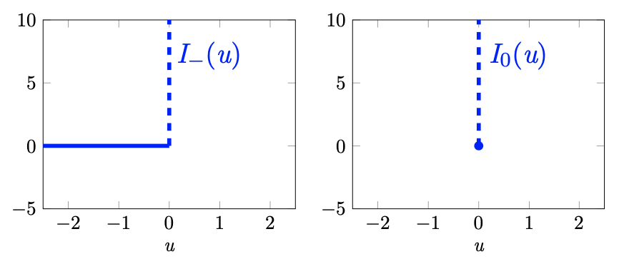
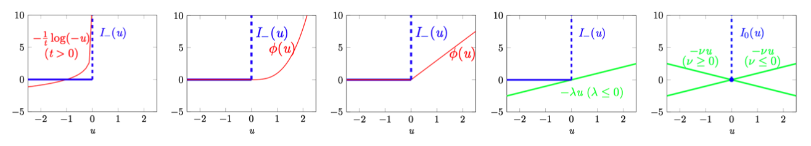
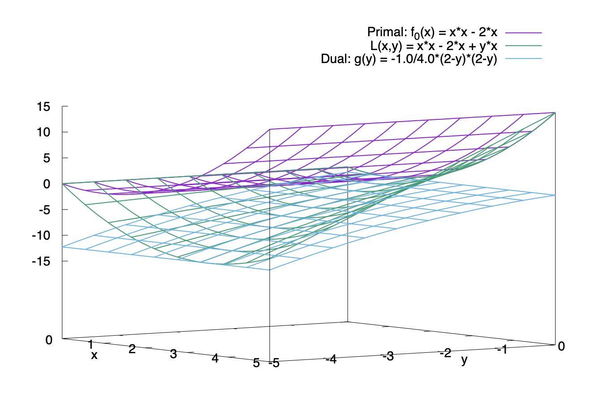
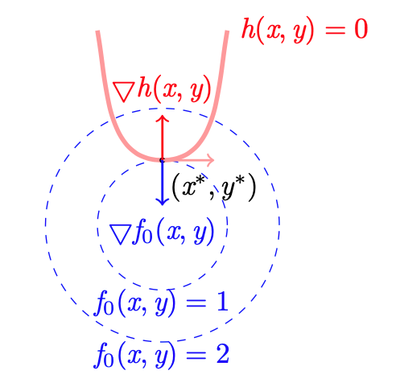
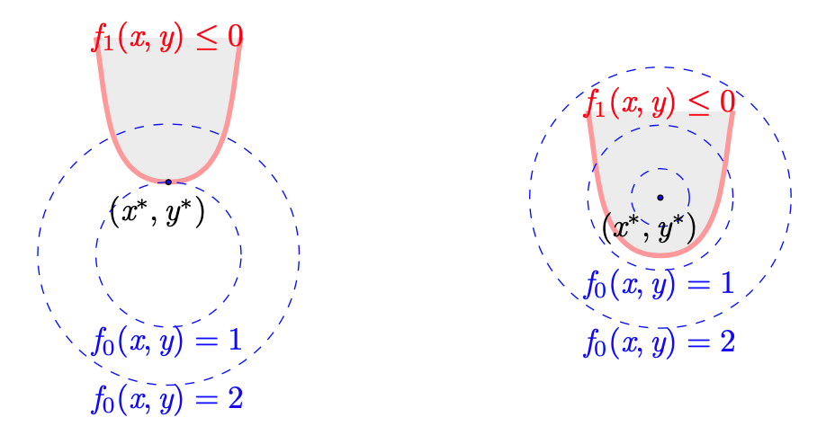

拉格朗日对偶
拉格朗日函数
考虑如下带约束的优化问题： \[ \begin{align} \min&\quad f(\mathbf x)\\ \text{s.t.}&\quad g_i(\mathbf x)\leq 0,\quad i=1,\ldots,m\\ &\quad h_i(\mathbf x)=0,\quad i=1,\ldots,k \end{align} \] 我们可以将其等价转换为无约束优化问题： \[ \min\quad f(\mathbf x)+\sum_{i=1}^mI_-(g_i(\mathbf x))+\sum_{i=1}^kI_0(h_i(\mathbf x)) \] 其中，\(I_-(u)\) 与 \(I_0(u)\) 定义为： \[ I_-(u)=\begin{cases}0,&u\leq 0\\\infty,&u>0\end{cases}\quad\quad I_0(u)=\begin{cases}0,&u=0\\\infty,&u\neq 0\end{cases} \] 
直观上，如果 \(g_i(\mathbf x)>0\)，那么 \(I_-(g_i(\mathbf x))=\infty\)，因此为了最小化目标函数，必须有 \(g_i(\mathbf x)\leq 0\)；同理，如果 \(h_i(\mathbf x)\neq0\)，那么 \(I_0(h_i(\mathbf x))=\infty\)，因此为了最小化目标函数，必须有 \(h_i(\mathbf x)=0\). 故二者等价。
然而，\(I_-(u)\) 和 \(I_0(u)\) 都有不可导点，这让我们难以求解问题。为此，一个常见的技巧就是用方便优化的函数代替它们。
例如，我们可以用如下的 logarithm barrier function 代替 \(I_-(u)\)： \[ \hat I_-(u)=-\frac{1}{t}\log(-u),\quad t>0 \] 也可以用如下的 penalty function 代替 \(I_-(u)\)： \[ \hat I_-(u)=\Phi(u)=\begin{cases}u^t,&u\geq 0\quad(t>1)\\ 0,&\text{otherwise}\end{cases} \] 还可以用 ReLU 代替 \(I_-(u)\)： \[ \hat I_-(u)=\Phi(u)=\begin{cases}ku,&u\geq 0\quad(k\geq 0)\\0,&\text{otherwise}\end{cases} \] 甚至可以用线性函数代替 \(I_-(u)\)： \[ \hat I_-(u)=-\lambda u\quad(\lambda\leq0) \] 上面四种函数都是 \(I_-(u)\) 的下界，如下靠左四图所示：

这里我们特别考虑线性函数情形。对 \(I_0(u)\) 也用线性函数做类似的代替，如上最右图所示： \[ \hat I_0(u)=-\nu u\quad(\nu\in\mathbb R) \] 那么，用 \(\hat I_-(u)\) 和 \(\hat I_0(u)\) 代替 \(I_-(u)\) 和 \(I_0(u)\)，则优化目标变成： \[ L(\mathbf x,\boldsymbol\lambda,\boldsymbol\nu)=f(\mathbf x)-\sum_{i=1}^m\lambda_ig_i(\mathbf x)-\sum_{i=1}^k\nu_ih_i(\mathbf x)\quad (\lambda_i\leq0,\,i=1,2,\ldots,m) \] 这就是拉格朗日函数，其中 \(\lambda_i\) 和 \(\nu_i\) 称作拉格朗日乘子。
从推导过程可以看出，对于任意合法的解 \(\mathbf x\)，拉格朗日函数都是原优化目标 \(f(\mathbf x)\) 的下界： \[ L(\mathbf x,\boldsymbol\lambda,\boldsymbol\nu)\leq f(\mathbf x),\quad \mathbf x\in \{\text{feasible solutions}\},\,\boldsymbol\lambda\leq0 \]
拉格朗日对偶函数
拉格朗日对偶函数定义为拉格朗日函数的下确界： \[ g(\boldsymbol\lambda, \boldsymbol\nu)=\inf_{\mathbf x}L(\mathbf x,\boldsymbol\lambda,\boldsymbol\nu) \] 于是对于合法的解 \(\mathbf x\)，拉格朗日对偶函数 \(g(\boldsymbol\lambda,\boldsymbol\nu)\)、拉格朗日函数 \(L(\mathbf x,\boldsymbol\lambda,\boldsymbol\nu)\) 和原优化目标 \(f(\mathbf x)\) 有关系： \[ g(\boldsymbol\lambda,\boldsymbol\nu)\leq L(\mathbf x,\boldsymbol\lambda,\boldsymbol\nu)\leq f(\mathbf x),\quad \mathbf x\in\{\text{feasible solutions}\},\,\boldsymbol\lambda\leq0 \] 注意对偶函数 \(g(\boldsymbol\lambda,\boldsymbol\nu)\) 是 \(\boldsymbol\lambda,\boldsymbol\nu\) 的函数，原函数 \(f(\mathbf x)\) 是 \(\mathbf x\) 的函数，二者通过拉格朗日函数 \(L(\mathbf x,\boldsymbol\lambda,\boldsymbol\nu)\) 作为桥梁相连接。

由于对偶函数是原函数的下界，所以对偶函数的最大值小于等于原函数的最小值。如果二者正好相等（即具有强对偶性，见下一节），那么原问题就可以转化为如下的对偶问题： \[ \begin{align} \max_{\boldsymbol\lambda,\boldsymbol\nu}&\quad g(\boldsymbol\lambda,\boldsymbol\nu)\\ \text{s.t.}&\quad\boldsymbol\lambda\leq\mathbf0 \end{align} \] 转化成对偶问题的好处在于——对偶函数一定是凹函数（即使原函数不是凸的或凹的），这是因为： \[ g(\boldsymbol\lambda,\boldsymbol\nu)=\inf_{\mathbf x}L(\mathbf x,\boldsymbol\lambda,\boldsymbol\nu)=\inf_\mathbf x\left\{f(\mathbf x)-\sum_{i=1}^m\lambda_ig_i(\mathbf x)-\sum_{i=1}^k\nu_ih_i(\mathbf x)\right\} \] 括号内是关于 \(\boldsymbol\lambda,\boldsymbol\nu\) 的仿射函数，而 \(g(\boldsymbol\lambda,\boldsymbol\nu)\) 是该仿射函数的逐点下确界，因而一定是凹函数。证明如下：为书写简便起见，记 \(\boldsymbol\gamma=(\boldsymbol\lambda,\boldsymbol\nu)\)，设 \(0<\theta<1\)，则： \[ \begin{align} g(\theta\boldsymbol\gamma_1+(1-\theta)\boldsymbol\gamma_2)&=\inf_\mathbf xL(\mathbf x,\theta\boldsymbol\gamma_1+(1-\theta)\boldsymbol\gamma_2)\\ &=\inf_\mathbf x \big\{\theta L(\mathbf x,\boldsymbol\gamma_1)+(1-\theta)L(\mathbf x,\boldsymbol\gamma_2)\big\}&&L\text{ is affine}\\ &\geq\theta\inf_\mathbf xL(\mathbf x,\boldsymbol\gamma_1)+(1-\theta)\inf_\mathbf xL(\mathbf x,\boldsymbol\gamma_2)&&\text{inf's property}\\ &=\theta g(\boldsymbol\gamma_1)+(1-\theta)g(\boldsymbol\gamma_2) \end{align} \] 因此 \(g(\boldsymbol\lambda,\boldsymbol\nu)\) 是凹函数。于是，对偶问题一定是一个凸优化问题，有时会比原问题更容易求解。
弱/强对偶性
尽管对偶问题有着非常好的性质（一定是凸优化问题），但是一般情况下我们只能保证其最优解小于等于原问题最优解，这就是弱对偶性。如果对偶问题最优解一定等于原问题最优解，那么称该问题具有强对偶性。
Slater 条件是强对偶性成立的充分非必要条件：设原问题是凸优化问题，即 \(f(\mathbf x),\,g_i(\mathbf x)\) 均为凸函数且 \(h_i(\mathbf x)\) 为仿射函数，若存在 \(\mathbf x\in\text{relint}(\mathcal D)\) 使得 \[ \begin{align} &g_i(\mathbf x)<0,\quad i=1,\ldots,m\\ &h_i(\mathbf x)=0,\quad i=1,\ldots,k \end{align} \] 成立，则强对偶性成立。其中 \(\text{relint}(\mathcal D)\) 表示定义域的相对内部 (relative interior)，即定义域去除边界的所有点构成的集合。
注意 Slater 条件是充分非必要条件，因此满足 Slater 条件一定具有强对偶性，但不满足 Slater 条件也可能具有强对偶性。
几何视角与 KKT 条件
等式约束
考虑如下只有一个等式约束的优化问题： \[ \begin{align} \min&\quad f(\mathbf x)\\ \text{s.t.}&\quad h(\mathbf x)=0 \end{align} \] 为方便可视化，假设 \(\mathbf x=(x,y)^T\in\mathbb R^2\)，作出 \(f(\mathbf x)\) 的等值面以及 \(h(\mathbf x)=0\) 代表的约束曲面，如下图所示：

首先注意到约束曲面上任一点 \(\mathbf x\) 关于 \(h\) 的梯度 \(\nabla h(\mathbf x)\) 与约束曲面是正交的。为了说明这一点，考虑约束曲面上的一点 \(\mathbf x\) 和也在约束曲面上的邻近的一点 \(\mathbf x+\epsilon\). 在 \(\mathbf x\) 处做泰勒展开： \[ h(\mathbf x+\epsilon)\simeq h(\mathbf x)+\epsilon^T\nabla h(\mathbf x) \] 由于 \(\mathbf x,\mathbf x+\epsilon\) 都在约束曲面上，所以 \(h(\mathbf x+\epsilon)=h(\mathbf x)=0\)，于是 \(\epsilon^T\nabla h(\mathbf x)≃0\). 当 \(\Vert\epsilon\Vert\to0\) 时，有 \(\epsilon^T\nabla h(\mathbf x)\to0\). 由于 \(\epsilon\) 是平行于约束曲面的，所以 \(\nabla h(\mathbf x)\) 就是约束曲面的法向量方向，即与之正交。
现在我们想找到一个 \(\mathbf x^\ast\) 使得 \(f(\mathbf x^\ast)\) 达到最小。这样的点一定满足 \(\nabla f(\mathbf x^\ast)\) 也与约束曲面正交，否则我们可以将其继续在约束曲面上沿梯度反方向移动，使得 \(f(\mathbf x^\ast)\) 更小。综上，\(\nabla f(\mathbf x^\ast)\) 与 \(\nabla h(\mathbf x^\ast)\) 平行，即存在一个 \(\boldsymbol\nu^\ast\)，使得： \[ \nabla f(\mathbf x^\ast)=\boldsymbol\nu^\ast\nabla h(\mathbf x^\ast) \] 如果我们聪明地构造函数： \[ L(\mathbf x,\boldsymbol\nu)=f(\mathbf x)-\boldsymbol\nu h(\mathbf x) \] 那么 \(\mathbf x^\ast\) 就是 \(\nabla_\mathbf x L(\mathbf x,\boldsymbol\nu)=\mathbf0\) 的解。进一步地，令 \(\nabla_\boldsymbol\nu L(\mathbf x,\boldsymbol\nu)=\mathbf 0\) 就恰好得到了约束条件 \(h(\mathbf x)=0\). 因此，求解原问题就相当于在求解拉格朗日函数 \(L(\mathbf x,\boldsymbol\nu)\) 的驻点。换句话说，\(\mathbf x^\ast,\boldsymbol\nu^\ast\) 为最优解的必要条件为： \[ \begin{align} \nabla_\mathbf x L(\mathbf x^\ast,\boldsymbol\nu^\ast)&=\nabla f(\mathbf x^\ast)-\boldsymbol\nu^\ast\nabla h(\mathbf x^\ast)=\mathbf 0\\ \nabla_\boldsymbol\nu L(\mathbf x^\ast,\boldsymbol\nu^\ast)&=h(\mathbf x^\ast)=0 \end{align} \]
不等约束
接下来考虑具有不等约束的优化问题： \[ \begin{align} \min&\quad f(\mathbf x)\\ \text{s.t.}&\quad g(\mathbf x)\leq0 \end{align} \] 此时可行域不再是一个约束曲面，而是曲面所包围的一个区域。仍然构造拉格朗日函数： \[ L(\mathbf x,\boldsymbol\lambda)=f(\mathbf x)-\boldsymbol\lambda g(\mathbf x) \] 分两种情形讨论：
- 最优解落在约束区域内，即 \(g(\mathbf x^\ast)<0\)，如下右图所示。此时约束条件并没有发挥作用，问题退化为无约束情形。因此若 \(\mathbf x^\ast\) 是最优解，则满足 \(\nabla f(\mathbf x^\ast)=\mathbf 0\)，对应拉格朗日乘子 \(\boldsymbol\lambda^\ast=\mathbf0\)；
- 最优解落在约束区域边界上，即 \(g(\mathbf x^\ast)=0\)，如下左图所示。此时回到了等式约束下的优化问题，可以通过解拉格朗日函数的驻点求解。但是为了让 \(f(\mathbf x^\ast)\) 最小，\(\nabla f(\mathbf x^\ast)\) 必须朝向区域 \(g(\mathbf x)<0\) 的内部，否则沿着梯度反方向移动就可以在 \(g(\mathbf x)<0\) 区域内找到更小的 \(f(\mathbf x^\ast)\). 由于 \(\nabla f(\mathbf x^\ast)=\boldsymbol\lambda^\ast\nabla g(\mathbf x^\ast)\)，所以此时 \(\boldsymbol\lambda^\ast<\mathbf0\).

上述两种情形可以通过 \(\boldsymbol\lambda^\ast g(\mathbf x^\ast)=\mathbf0\) 统一起来。所以综上所述，\(\mathbf x^\ast,\boldsymbol\lambda^\ast\) 是最优解的必要条件为： \[ \begin{align} \nabla_\mathbf xL(\mathbf x^\ast,\boldsymbol\lambda^\ast)&=\mathbf0\\ g(\mathbf x^\ast)&\leq 0\\ \boldsymbol\lambda^\ast&\leq \mathbf0\\ \boldsymbol\lambda^\ast g(\mathbf x^\ast)&=\mathbf0 \end{align} \]
KKT 条件
将上述结果推广到多个等式和不等式约束的情况下，考虑一般性的优化问题及其对偶问题： \[ \begin{align} \min&\quad f(\mathbf x)\\ \text{s.t.}&\quad g_i(\mathbf x)\leq 0,\quad i=1,\ldots,m\\ &\quad h_i(\mathbf x)=0,\quad i=1,\ldots,k\\ \\ \max_{\boldsymbol\lambda,\boldsymbol\nu}&\quad g(\boldsymbol\lambda,\boldsymbol\nu)\\ \text{s.t.}&\quad\boldsymbol\lambda\leq\mathbf0 \end{align} \] 构造拉格朗日函数： \[ L(\mathbf x,\boldsymbol\lambda,\boldsymbol\nu)=f(\mathbf x)-\sum_{i=1}^m\lambda_ig_i(\mathbf x)-\sum_{i=1}^k\nu_ih_i(\mathbf x)\quad (\lambda_i\leq0,\,i=1,2,\ldots,m) \] 假设强对偶性成立，则 \(\mathbf x^\ast,\boldsymbol\lambda^\ast,\boldsymbol\nu^\ast\) 是原问题和对偶问题的最优解的必要条件为： \[ \begin{align} \nabla_\mathbf xL(\mathbf x^\ast,\boldsymbol\lambda^\ast,\boldsymbol\nu^\ast)&=0&&\text{(Stationary point)}\\ g_i(\mathbf x^\ast)\leq0,\,h_i(\mathbf x^\ast)&=0&&\text{(Primal feasibility)}\\ \lambda_i^\ast&\leq0&&\text{(Dual feasibility)}\\ \lambda_i^\ast g_i(\mathbf x^\ast)&=0&&\text{(Complementary slackness)} \end{align} \] 上述条件统称作 KKT (Karush-Kuhn-Tucker) 条件。
上文从几何视角直观地展现了 KKT 条件的意义，但不是严谨证明。下面给出互补松弛性条件的证明： \[\begin{align}f(\mathbf x^\ast)&=g(\boldsymbol\lambda^\ast,\boldsymbol\nu^\ast)\\&=\inf_\mathbf x\left\{f(\mathbf x)-\sum_{i=1}^m\lambda_i^\ast g_i(\mathbf x)-\sum_{i=1}^k\nu_i^\ast h_i(\mathbf x)\right\}\\&\leq f(\mathbf x^\ast)-\sum_{i=1}^m\lambda_i^\ast g_i(\mathbf x^\ast)-\sum_{i=1}^k\nu_i^\ast h_i(\mathbf x^\ast)\\&\leq f(\mathbf x^\ast)\end{align}\] 注意第一个等号需要强对偶性的支持。上式中的小于等于都只能取等，易知： \[\sum_{i=1}^m\lambda_i^\ast g_i(\mathbf x^\ast)=0\] 又由于 \(\lambda_i^\ast\leq0,\,g_i(\mathbf x^\ast)\leq0\implies \lambda_i^\ast g_i(\mathbf x^\ast)\geq0\)，所以只能是 \(\lambda_i^\ast g_i(\mathbf x^\ast)=0\)，即互补松弛性条件成立。